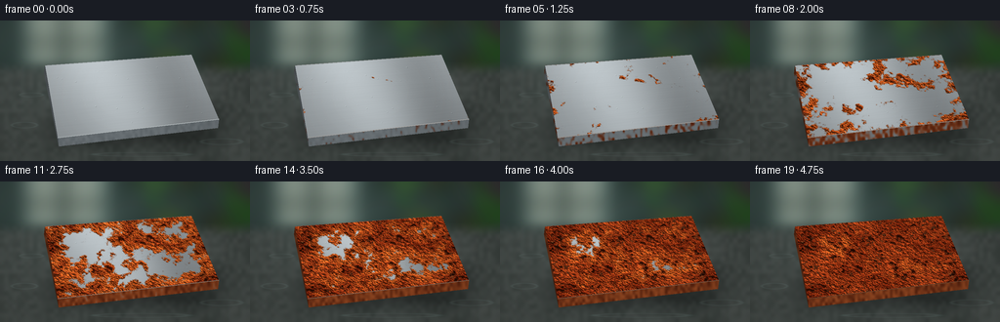
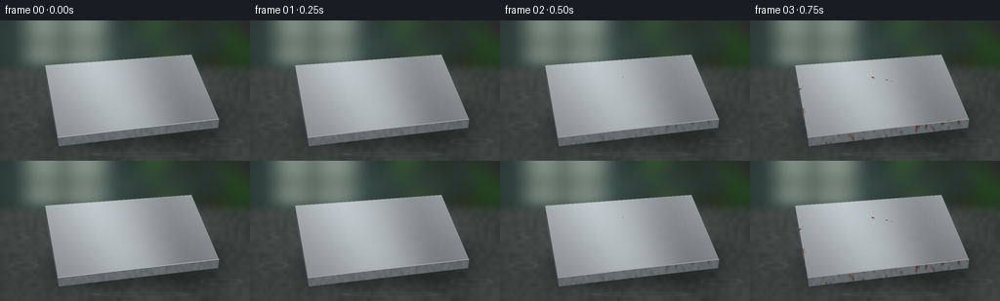
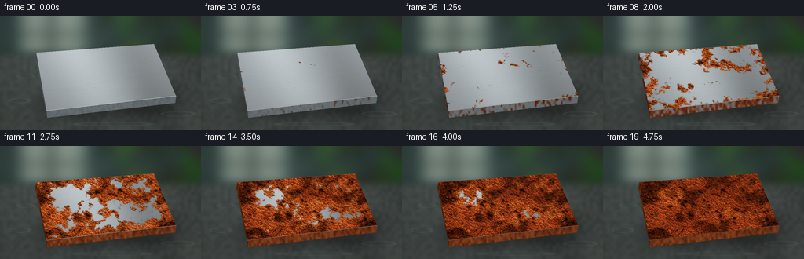
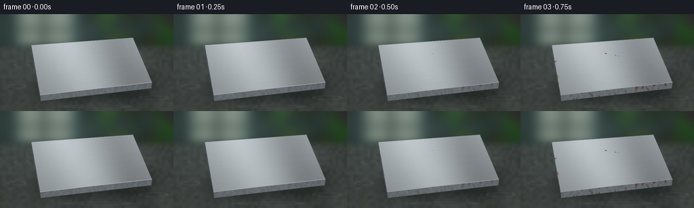

CODING AGENTS AS PIXEL WORLD MODELS
traex/GPT-6.1-Sol · phygen_156
点击播放 · 原生 RGB 像素
逐轮保存的候选
回放视频、检查图与代码变化。
每份候选均可单独播放。实际图片检查记录在下方工具轨迹中。
候选 01播放与检查图
点击播放 · 原生 RGB 像素


展开代码变化
--- 上一保存版本
+++ 本次保存版本
@@ -0,0 +1,227 @@
+import numpy as np
+from PIL import Image, ImageDraw, ImageFilter
+from pathlib import Path
+import artifact_io
+
+ROOT = Path(__file__).resolve().parent
+W,H,S=256,144,3
+w,h=W*S,H*S
+rng=np.random.default_rng(156)
+
+def noise(shape, cells, seed):
+ r=np.random.default_rng(seed)
+ a=r.random((cells[1],cells[0])).astype(np.float32)
+ im=Image.fromarray(a, 'F').resize((shape[1],shape[0]),Image.Resampling.BICUBIC)
+ return np.array(im)
+
+def smooth(a):
+ a=np.clip(a,0,1)
+ return a*a*(3-2*a)
+
+Y,X=np.mgrid[0:h,0:w].astype(float)
+x,y=X/S,Y/S
+# An out-of-focus, damp workshop with a cool window and hints of foliage.
+base=np.zeros((h,w,3),float)
+base[:]=[39,51,48]
+illum=22*np.exp(-((x-80)/125)**2-((y-28)/55)**2)
+base += illum[...,None]*np.array([.75,1,.96])
+bgnoise=noise((h,w),(11,7),77)-.5
+base += bgnoise[...,None]*14
+bg=Image.fromarray(np.uint8(np.clip(base,0,255)))
+d=ImageDraw.Draw(bg)
+d.rectangle((24*S,-8*S,111*S,47*S),fill=(103,125,119))
+d.rectangle((31*S,-8*S,101*S,44*S),fill=(137,151,140))
+d.line((65*S,0,65*S,48*S),fill=(51,65,61),width=6*S)
+d.line((24*S,23*S,111*S,23*S),fill=(59,72,65),width=5*S)
+for i in range(26):
+ cx,cy=rng.uniform(135,262),rng.uniform(-8,58)
+ r=rng.uniform(5,18)
+ d.ellipse(((cx-r)*S,(cy-r)*S,(cx+r)*S,(cy+r)*S),fill=tuple(rng.integers([30,46,33],[65,86,58])))
+bg=bg.filter(ImageFilter.GaussianBlur(8*S))
+base=np.array(bg).astype(float)
+# Stone bench, wet and slightly reflective.
+ground=smooth((y-39)/20)
+stone=np.zeros_like(base)
+st=noise((h,w),(60,32),12)-.5
+large=noise((h,w),(8,5),13)-.5
+stone[:]=[63,69,66]
+stone += (st*10+large*11)[...,None]
+stone += (14*np.exp(-((x-80)/75)**2)*np.exp(-((y-67)/28)**2))[...,None]*[.85,1,1]
+base=base*(1-ground[...,None])+stone*ground[...,None]
+# Soft contact shadows anchor the iron slab.
+shadow=np.exp(-((x-137)/89)**6-((y-108)/22)**4)*.34
+base*=1-shadow[...,None]
+# A few water glints/puddles on the work surface, deliberately low contrast.
+for cx,cy,rx,ry in [(25,107,13,3),(227,124,21,3),(145,137,48,2),(32,76,12,2)]:
+ ring=np.exp(-(((x-cx)/rx)**2+((y-cy)/ry)**2-1)**2/.055)
+ base += ring[...,None]*[8,11,11]
+
+# A single thick rectangular iron plate, viewed at a shallow oblique angle.
+quad=np.array([[46,46],[196,35],[224,101],[59,120]],float)
+# Homography of unit UV square into image, with consistent perspective.
+uvcorners=np.array([[0,0],[1,0],[1,1],[0,1]],float)
+a=[];b=[]
+for (u,v),(xx,yy) in zip(uvcorners,quad):
+ a.extend([[u,v,1,0,0,0,-xx*u,-xx*v],[0,0,0,u,v,1,-yy*u,-yy*v]])
+ b.extend([xx,yy])
+mat=np.r_[np.linalg.solve(a,b),1].reshape(3,3)
+inv=np.linalg.inv(mat)
+z=inv[2,0]*x+inv[2,1]*y+inv[2,2]
+u=(inv[0,0]*x+inv[0,1]*y+inv[0,2])/z
+v=(inv[1,0]*x+inv[1,1]*y+inv[1,2])/z
+mask=(u>=0)&(u<=1)&(v>=0)&(v<=1)
+
+def project(u,v):
+ p=mat@np.array([u,v,1.])
+ return p[:2]/p[2]
+
+# All material fields are static in object space so the corrosion grows, not flickers.
+TH,TW=480,840
+V,U=np.mgrid[0:TH,0:TW].astype(float)
+U/=TW-1;V/=TH-1
+n1=noise((TH,TW),(7,5),3)
+n2=noise((TH,TW),(22,13),4)
+n3=noise((TH,TW),(64,38),5)
+n4=noise((TH,TW),(180,95),6)
+fine=np.random.default_rng(7).random((TH,TW))
+fractal=.46*n1+.26*n2+.18*n3+.10*n4
+# Moisture initiates rust at exposed edges and scattered microscopic defects.
+edge=np.minimum.reduce([U*1.4,(1-U)*1.4,V,1-V])
+start=.09+edge*1.2
+seeds=[]
+for i in range(32):
+ su,sv=rng.random(2)
+ if i<15:
+ side=i%4
+ if side==0: su=rng.uniform(0,.06)
+ elif side==1: su=rng.uniform(.94,1)
+ elif side==2: sv=rng.uniform(0,.06)
+ else: sv=rng.uniform(.94,1)
+ delay=rng.uniform(.025,.32)
+ d=np.sqrt(((U-su)*1.7)**2+(V-sv)**2)
+ start=np.minimum(start,delay+d*.93)
+ seeds.append((su,sv,delay))
+start += (n2-.5)*.18+(n3-.5)*.095+(n4-.5)*.045
+# Coverage progression is slow at the beginning and nearly complete over decades.
+lo,hi=np.percentile(start,[0,99.6])
+start=.04+(start-lo)/(hi-lo)*.83
+start=np.clip(start,.025,.9)
+# Rough oxidized surface with irregular dark cavities, granular crystals, and raised islands.
+pits=smooth((.33-n3)/.13)*smooth((.51-n2)/.17)
+ridges=smooth((n4-.56)/.22)
+height=(n3*.65+n4*.35 + ridges*.16-pits*.38)
+gy,gx=np.gradient(height)
+relief=np.clip(1+gx*9-gy*12,.52,1.42)
+# Spatial sampling from UV texture with bilinear interpolation.
+tu=np.clip(u*(TW-1),0,TW-1.001);tv=np.clip(v*(TH-1),0,TH-1.001)
+i=tu.astype(int);j=tv.astype(int);fu=tu-i;fv=tv-j
+
+def sample(a):
+ if a.ndim==3:
+ uu=fu[...,None];vv=fv[...,None]
+ else: uu=fu;vv=fv
+ return a[j,i]*(1-uu)*(1-vv)+a[j,i+1]*uu*(1-vv)+a[j+1,i]*(1-uu)*vv+a[j+1,i+1]*uu*vv
+
+# Smooth, cold steel with restrained directional grain and broad window reflection.
+brush=(noise((TH,TW),(7,400),21)-.5)*4
+silver=np.zeros((TH,TW,3),float)
+sh=151+23*(1-V)+brush+(fine-.5)*2
+ref=33*np.exp(-((U-.29-V*.13)/.25)**2)
+sh+=ref-22*np.exp(-((U-.80)/.19)**2)
+silver[:]=sh[...,None]*[.94,.98,1]
+# Micro-scratches, fixed and almost invisible.
+for k in range(100):
+ row=int(rng.integers(0,TH)); xx=int(rng.integers(0,TW-100));length=int(rng.integers(15,120))
+ silver[row,xx:xx+length]+=rng.uniform(-4,4)
+
+# Thin plate sides are also progressively oxidized.
+side_img=Image.new('L',(w,h),0);sd=ImageDraw.Draw(side_img)
+frontpoly=[tuple(quad[3]*S),tuple(quad[2]*S),(223*S,110*S),(60*S,129*S)]
+leftpoly=[tuple(quad[0]*S),tuple(quad[3]*S),(60*S,129*S),(45*S,54*S)]
+sd.polygon(frontpoly,fill=255);sd.polygon(leftpoly,fill=190)
+side_mask=np.array(side_img)/255
+side_noise=noise((h,w),(100,36),32)
+
+# Small condensation beads are bright curved lenses, not painted white dots.
+drops=[]
+for k in range(24):
+ du,dv=rng.uniform(.06,.94,2)
+ xx,yy=project(du,dv)
+ drops.append((xx,yy,rng.uniform(.50,1.5),rng.uniform(0,6.3)))
+# Stable raised scale fragments appear in later decades.
+flakes=[]
+for k in range(135):
+ du,dv=rng.uniform(.01,.99,2)
+ xx,yy=project(du,dv)
+ sz=rng.uniform(.6,2.1)
+ count=int(rng.integers(4,7))
+ angles=np.sort(rng.random(count)*np.pi*2)
+ pts=[(xx+np.cos(ang)*sz*rng.uniform(.6,1.3),yy+np.sin(ang)*sz*.56*rng.uniform(.6,1.3)) for ang in angles]
+ onset=float(start[int(dv*(TH-1)),int(du*(TW-1))])+rng.uniform(.16,.32)
+ flakes.append((pts,onset,float(rng.uniform(.7,1.2))))
+
+frames=[]
+for f in range(20):
+ t=f/19
+ image=base.copy()
+ sc=smooth((t-(.015+.39*side_noise))/.26)
+ side_clean=np.stack([94+side_noise*14,101+side_noise*14,105+side_noise*14],axis=-1)
+ side_rust=np.stack([84+side_noise*53,34+side_noise*33,15+side_noise*17],axis=-1)
+ side=side_clean*(1-sc[...,None])+side_rust*sc[...,None]
+ side*=np.where(side_mask[...,None]<.9,.73,1)
+ image=np.where((side_mask>0)[...,None],side,image)
+ coverage=smooth((t-start)/.075)
+ age=smooth((t-start)/.42)
+ # Fresh orange iron oxide ages into deep, reddish-brown scale.
+ color=np.zeros_like(silver)
+ varied=(fractal-.5)*82+(n4-.5)*33+(fine-.5)*12
+ color[...,0]=170-45*age+varied
+ color[...,1]=77-34*age+varied*.56
+ color[...,2]=27-11*age+varied*.24
+ color*=relief[...,None]
+ cavity=pits*age
+ color=color*(1-.60*cavity[...,None])
+ # Orange-gold granules catch the oblique, soft daylight.
+ color += (ridges*12)[...,None]*[1,.65,.22]
+ # Underfilm dark tarnish precedes red rust along the expanding rims.
+ tarnish=smooth((t-start+.033)/.095)*.15
+ clean=silver*(1-tarnish[...,None])
+ surface=clean*(1-coverage[...,None])+color*coverage[...,None]
+ tex=sample(surface)
+ image=np.where(mask[...,None],tex,image)
+ # Hairline milled bevel remains geometric while its metallic glint fades.
+ im=Image.fromarray(np.uint8(np.clip(image,0,255)))
+ dr=ImageDraw.Draw(im)
+ edge_color=tuple(int(a) for a in (np.array([178,185,187])*(1-t*.86)+np.array([98,49,23])*t*.86))
+ dr.line([tuple(quad[3]*S),tuple(quad[2]*S)],fill=edge_color,width=1*S)
+ dr.line([tuple(quad[0]*S),tuple(quad[1]*S)],fill=tuple(int(a*.82) for a in edge_color),width=1)
+ # Cracked and lifting corrosion scales, generated on the surface itself.
+ for pts,onset,mul in flakes:
+ alpha=float(smooth((t-onset)/.19))
+ if alpha<=0:continue
+ pp=[(xx*S,yy*S) for xx,yy in pts]
+ cx=sum(q[0] for q in pp)/len(pp);cy=sum(q[1] for q in pp)/len(pp)
+ pp=[(cx+(xx-cx)*alpha,cy+(yy-cy)*alpha) for xx,yy in pp]
+ col=(int(107*mul),int(49*mul),int(23*mul))
+ dr.polygon([(xx+S*.4*alpha,yy+S*.6*alpha) for xx,yy in pp],fill=(49,28,18))
+ dr.polygon(pp,fill=col)
+ dr.line(pp[:2],fill=(int(162*mul),int(85*mul),int(36*mul)),width=1)
+ # Humidity remains evident throughout the decades.
+ ar=np.array(im).astype(float)
+ for dx,dy,rr,phase in drops:
+ # Larger beads on clean metal, smaller beads on rough rust.
+ r=rr*(1-.40*t)*(1+.11*np.sin(f*.8+phase))
+ dd=((x-dx)/r)**2+((y-dy)/(r*.66))**2
+ dm=(dd<1)&mask
+ lens=np.clip(1-dd,0,1)
+ ar[dm]*=(1-.13*lens[dm,None])
+ rim=np.exp(-((np.sqrt(dd)-.86)/.09)**2)
+ ar += (rim*mask)[...,None]*[10,12,12]
+ gl=np.exp(-((x-(dx-.26*r))/(.22*r+.08))**2-((y-(dy-.26*r))/(.16*r+.08))**2)
+ ar += (gl*mask)[...,None]*[62,65,64]
+ # Subtle vignette and natural optical softening; no camera motion.
+ vignette=1-.17*((x-128)/172)**2-.09*((y-72)/115)**2
+ ar*=vignette[...,None]
+ frame=Image.fromarray(np.uint8(np.clip(ar,0,255))).resize((W,H),Image.Resampling.LANCZOS)
+ frames.append(np.array(frame))
+artifact_io.save(np.stack(frames),ROOT)
候选 02播放与检查图
点击播放 · 原生 RGB 像素


展开代码变化
--- 上一保存版本
+++ 本次保存版本
@@ -11,7 +11,7 @@
def noise(shape, cells, seed):
r=np.random.default_rng(seed)
a=r.random((cells[1],cells[0])).astype(np.float32)
- im=Image.fromarray(a, 'F').resize((shape[1],shape[0]),Image.Resampling.BICUBIC)
+ im=Image.fromarray(a).resize((shape[1],shape[0]),Image.Resampling.BICUBIC)
return np.array(im)
def smooth(a):
@@ -111,7 +111,7 @@
ridges=smooth((n4-.56)/.22)
height=(n3*.65+n4*.35 + ridges*.16-pits*.38)
gy,gx=np.gradient(height)
-relief=np.clip(1+gx*9-gy*12,.52,1.42)
+relief=np.clip(1+gx*5-gy*7,.62,1.32)
# Spatial sampling from UV texture with bilinear interpolation.
tu=np.clip(u*(TW-1),0,TW-1.001);tv=np.clip(v*(TH-1),0,TH-1.001)
i=tu.astype(int);j=tv.astype(int);fu=tu-i;fv=tv-j
@@ -178,6 +178,9 @@
color[...,0]=170-45*age+varied
color[...,1]=77-34*age+varied*.56
color[...,2]=27-11*age+varied*.24
+ # Broad mineral staining and old, dark oxide break up the orange crust.
+ oldpatch=smooth((.54-(.65*n1+.35*n2))/.26)*age
+ color=color*(1-.40*oldpatch[...,None])
color*=relief[...,None]
cavity=pits*age
color=color*(1-.60*cavity[...,None])
可观测工具轨迹
实际执行的命令与返回图片。
命令 1exit 0
/bin/bash -lc 'ls -la && cat prompt.txt && cat GENERATION_RULES.md && cat task_spec.json'
命令 2exit 0
/bin/bash -lc 'cat artifact_io.py'
命令 3exit 0
/bin/bash -lc "cat > generate.py <<'PY'
import numpy as np
from PIL import Image, ImageDraw, ImageFilter
from pathlib import Path
import artifact_io
ROOT = Path(__file__).resolve().parent
W,H,S=256,144,3
w,h=W*S,H*S
rng=np.random.default_rng(156)
def noise(shape, cells, seed):
r=np.random.default_rng(seed)
a=r.random((cells[1],cells[0])).astype(np.float32)
im=Image.fromarray(a, 'F').resize((shape[1],shape[0]),Image.Resampling.BICUBIC)
return np.array(im)
def smooth(a):
a=np.clip(a,0,1)
return a*a*(3-2*a)
Y,X=np.mgrid[0:h,0:w].astype(float)
x,y=X/S,Y/S
# An out-of-focus, damp workshop with a cool window and hints of foliage.
base=np.zeros((h,w,3),float)
base[:]=[39,51,48]
illum=22*np.exp(-((x-80)/125)**2-((y-28)/55)**2)
base += illum[...,None]*np.array([.75,1,.96])
bgnoise=noise((h,w),(11,7),77)-.5
base += bgnoise[...,None]*14
bg=Image.fromarray(np.uint8(np.clip(base,0,255)))
d=ImageDraw.Draw(bg)
d.rectangle((24*S,-8*S,111*S,47*S),fill=(103,125,119))
d.rectangle((31*S,-8*S,101*S,44*S),fill=(137,151,140))
d.line((65*S,0,65*S,48*S),fill=(51,65,61),width=6*S)
d.line((24*S,23*S,111*S,23*S),fill=(59,72,65),width=5*S)
for i in range(26):
cx,cy=rng.uniform(135,262),rng.uniform(-8,58)
r=rng.uniform(5,18)
d.ellipse(((cx-r)*S,(cy-r)*S,(cx+r)*S,(cy+r)*S),fill=tuple(rng.integers([30,46,33],[65,86,58])))
bg=bg.filter(ImageFilter.GaussianBlur(8*S))
base=np.array(bg).astype(float)
# Stone bench, wet and slightly reflective.
ground=smooth((y-39)/20)
stone=np.zeros_like(base)
st=noise((h,w),(60,32),12)-.5
large=noise((h,w),(8,5),13)-.5
stone[:]=[63,69,66]
stone += (st*10+large*11)[...,None]
stone += (14*np.exp(-((x-80)/75)**2)*np.exp(-((y-67)/28)**2))[...,None]*[.85,1,1]
base=base*(1-ground[...,None])+stone*ground[...,None]
# Soft contact shadows anchor the iron slab.
shadow=np.exp(-((x-137)/89)**6-((y-108)/22)**4)*.34
base*=1-shadow[...,None]
# A few water glints/puddles on the work surface, deliberately low contrast.
for cx,cy,rx,ry in [(25,107,13,3),(227,124,21,3),(145,137,48,2),(32,76,12,2)]:
ring=np.exp(-(((x-cx)/rx)**2+((y-cy)/ry)**2-1)**2/.055)
base += ring[...,None]*[8,11,11]
# A single thick rectangular iron plate, viewed at a shallow oblique angle.
quad=np.array([[46,46],[196,35],[224,101],[59,120]],float)
# Homography of unit UV square into image, with consistent perspective.
uvcorners=np.array([[0,0],[1,0],[1,1],[0,1]],float)
a=[];b=[]
for (u,v),(xx,yy) in zip(uvcorners,quad):
a.extend([[u,v,1,0,0,0,-xx*u,-xx*v],[0,0,0,u,v,1,-yy*u,-yy*v]])
b.extend([xx,yy])
mat=np.r_[np.linalg.solve(a,b),1].reshape(3,3)
inv=np.linalg.inv(mat)
z=inv[2,0]*x+inv[2,1]*y+inv[2,2]
u=(inv[0,0]*x+inv[0,1]*y+inv[0,2])/z
v=(inv[1,0]*x+inv[1,1]*y+inv[1,2])/z
mask=(u>=0)&(u<=1)&(v>=0)&(v<=1)
def project(u,v):
p=mat@np.array([u,v,1.])
return p[:2]/p[2]
# All material fields are static in object space so the corrosion grows, not flickers.
TH,TW=480,840
V,U=np.mgrid[0:TH,0:TW].astype(float)
U/=TW-1;V/=TH-1
n1=noise((TH,TW),(7,5),3)
n2=noise((TH,TW),(22,13),4)
n3=noise((TH,TW),(64,38),5)
n4=noise((TH,TW),(180,95),6)
fine=np.random.default_rng(7).random((TH,TW))
fractal=.46*n1+.26*n2+.18*n3+.10*n4
# Moisture initiates rust at exposed edges and scattered microscopic defects.
edge=np.minimum.reduce([U*1.4,(1-U)*1.4,V,1-V])
start=.09+edge*1.2
seeds=[]
for i in range(32):
su,sv=rng.random(2)
if i<15:
side=i%4
if side==0: su=rng.uniform(0,.06)
elif side==1: su=rng.uniform(.94,1)
elif side==2: sv=rng.uniform(0,.06)
else: sv=rng.uniform(.94,1)
delay=rng.uniform(.025,.32)
d=np.sqrt(((U-su)*1.7)**2+(V-sv)**2)
start=np.minimum(start,delay+d*.93)
seeds.append((su,sv,delay))
start += (n2-.5)*.18+(n3-.5)*.095+(n4-.5)*.045
# Coverage progression is slow at the beginning and nearly complete over decades.
lo,hi=np.percentile(start,[0,99.6])
start=.04+(start-lo)/(hi-lo)*.83
start=np.clip(start,.025,.9)
# Rough oxidized surface with irregular dark cavities, granular crystals, and raised islands.
pits=smooth((.33-n3)/.13)*smooth((.51-n2)/.17)
ridges=smooth((n4-.56)/.22)
height=(n3*.65+n4*.35 + ridges*.16-pits*.38)
gy,gx=np.gradient(height)
relief=np.clip(1+gx*9-gy*12,.52,1.42)
# Spatial sampling from UV texture with bilinear interpolation.
tu=np.clip(u*(TW-1),0,TW-1.001);tv=np.clip(v*(TH-1),0,TH-1.001)
i=tu.astype(int);j=tv.astype(int);fu=tu-i;fv=tv-j
def sample(a):
if a.ndim==3:
uu=fu[...,None];vv=fv[...,None]
else: uu=fu;vv=fv
return a[j,i]*(1-uu)*(1-vv)+a[j,i+1]*uu*(1-vv)+a[j+1,i]*(1-uu)*vv+a[j+1,i+1]*uu*vv
# Smooth, cold steel with restrained directional grain and broad window reflection.
brush=(noise((TH,TW),(7,400),21)-.5)*4
silver=np.zeros((TH,TW,3),float)
sh=151+23*(1-V)+brush+(fine-.5)*2
ref=33*np.exp(-((U-.29-V*.13)/.25)**2)
sh+=ref-22*np.exp(-((U-.80)/.19)**2)
silver[:]=sh[...,None]*[.94,.98,1]
# Micro-scratches, fixed and almost invisible.
for k in range(100):
row=int(rng.integers(0,TH)); xx=int(rng.integers(0,TW-100));length=int(rng.integers(15,120))
silver[row,xx:xx+length]+=rng.uniform(-4,4)
# Thin plate sides are also progressively oxidized.
side_img=Image.new('L',(w,h),0);sd=ImageDraw.Draw(side_img)
frontpoly=[tuple(quad[3]*S),tuple(quad[2]*S),(223*S,110*S),(60*S,129*S)]
leftpoly=[tuple(quad[0]*S),tuple(quad[3]*S),(60*S,129*S),(45*S,54*S)]
sd.polygon(frontpoly,fill=255);sd.polygon(leftpoly,fill=190)
side_mask=np.array(side_img)/255
side_noise=noise((h,w),(100,36),32)
# Small condensation beads are bright curved lenses, not painted white dots.
drops=[]
for k in range(24):
du,dv=rng.uniform(.06,.94,2)
xx,yy=project(du,dv)
drops.append((xx,yy,rng.uniform(.50,1.5),rng.uniform(0,6.3)))
# Stable raised scale fragments appear in later decades.
flakes=[]
for k in range(135):
du,dv=rng.uniform(.01,.99,2)
xx,yy=project(du,dv)
sz=rng.uniform(.6,2.1)
count=int(rng.integers(4,7))
angles=np.sort(rng.random(count)*np.pi*2)
pts=[(xx+np.cos(ang)*sz*rng.uniform(.6,1.3),yy+np.sin(ang)*sz*.56*rng.uniform(.6,1.3)) for ang in angles]
onset=float(start[int(dv*(TH-1)),int(du*(TW-1))])+rng.uniform(.16,.32)
flakes.append((pts,onset,float(rng.uniform(.7,1.2))))
frames=[]
for f in range(20):
t=f/19
image=base.copy()
sc=smooth((t-(.015+.39*side_noise))/.26)
side_clean=np.stack([94+side_noise*14,101+side_noise*14,105+side_noise*14],axis=-1)
side_rust=np.stack([84+side_noise*53,34+side_noise*33,15+side_noise*17],axis=-1)
side=side_clean*(1-sc[...,None])+side_rust*sc[...,None]
side*=np.where(side_mask[...,None]<.9,.73,1)
image=np.where((side_mask>0)[...,None],side,image)
coverage=smooth((t-start)/.075)
age=smooth((t-start)/.42)
# Fresh orange iron oxide ages into deep, reddish-brown scale.
color=np.zeros_like(silver)
varied=(fractal-.5)*82+(n4-.5)*33+(fine-.5)*12
color[...,0]=170-45*age+varied
color[...,1]=77-34*age+varied*.56
color[...,2]=27-11*age+varied*.24
color*=relief[...,None]
cavity=pits*age
color=color*(1-.60*cavity[...,None])
# Orange-gold granules catch the oblique, soft daylight.
color += (ridges*12)[...,None]*[1,.65,.22]
# Underfilm dark tarnish precedes red rust along the expanding rims.
tarnish=smooth((t-start+.033)/.095)*.15
clean=silver*(1-tarnish[...,None])
surface=clean*(1-coverage[...,None])+color*coverage[...,None]
tex=sample(surface)
image=np.where(mask[...,None],tex,image)
# Hairline milled bevel remains geometric while its metallic glint fades.
im=Image.fromarray(np.uint8(np.clip(image,0,255)))
dr=ImageDraw.Draw(im)
edge_color=tuple(int(a) for a in (np.array([178,185,187])*(1-t*.86)+np.array([98,49,23])*t*.86))
dr.line([tuple(quad[3]*S),tuple(quad[2]*S)],fill=edge_color,width=1*S)
dr.line([tuple(quad[0]*S),tuple(quad[1]*S)],fill=tuple(int(a*.82) for a in edge_color),width=1)
# Cracked and lifting corrosion scales, generated on the surface itself.
for pts,onset,mul in flakes:
alpha=float(smooth((t-onset)/.19))
if alpha<=0:continue
pp=[(xx*S,yy*S) for xx,yy in pts]
cx=sum(q[0] for q in pp)/len(pp);cy=sum(q[1] for q in pp)/len(pp)
pp=[(cx+(xx-cx)*alpha,cy+(yy-cy)*alpha) for xx,yy in pp]
col=(int(107*mul),int(49*mul),int(23*mul))
dr.polygon([(xx+S*.4*alpha,yy+S*.6*alpha) for xx,yy in pp],fill=(49,28,18))
dr.polygon(pp,fill=col)
dr.line(pp[:2],fill=(int(162*mul),int(85*mul),int(36*mul)),width=1)
# Humidity remains evident throughout the decades.
ar=np.array(im).astype(float)
for dx,dy,rr,phase in drops:
# Larger beads on clean metal, smaller beads on rough rust.
r=rr*(1-.40*t)*(1+.11*np.sin(f*.8+phase))
dd=((x-dx)/r)**2+((y-dy)/(r*.66))**2
dm=(dd<1)&mask
lens=np.clip(1-dd,0,1)
ar[dm]*=(1-.13*lens[dm,None])
rim=np.exp(-((np.sqrt(dd)-.86)/.09)**2)
ar += (rim*mask)[...,None]*[10,12,12]
gl=np.exp(-((x-(dx-.26*r))/(.22*r+.08))**2-((y-(dy-.26*r))/(.16*r+.08))**2)
ar += (gl*mask)[...,None]*[62,65,64]
# Subtle vignette and natural optical softening; no camera motion.
vignette=1-.17*((x-128)/172)**2-.09*((y-72)/115)**2
ar*=vignette[...,None]
frame=Image.fromarray(np.uint8(np.clip(ar,0,255))).resize((W,H),Image.Resampling.LANCZOS)
frames.append(np.array(frame))
artifact_io.save(np.stack(frames),ROOT)
PY
python generate.py"命令 4exit 0
/bin/bash -lc "python - <<'PY'
p='generate.py'
s=open(p).read().replace(\"Image.fromarray(a, 'F')\",'Image.fromarray(a)')
s=s.replace('1+gx*9-gy*12,.52,1.42','1+gx*5-gy*7,.62,1.32')
s=s.replace('color*=relief[...,None]','''# Broad mineral staining and old, dark oxide break up the orange crust.
oldpatch=smooth((.54-(.65*n1+.35*n2))/.26)*age
color=color*(1-.40*oldpatch[...,None])
color*=relief[...,None]''')
open(p,'w').write(s)
PY
python generate.py
ls -lh pixels.npz index.html inspection.png"视觉工具实际返回图片 1

保存候选 2 份；完成命令 4 次；可验证图片返回 1 张。原始 API 响应与完整日志保留在本地。